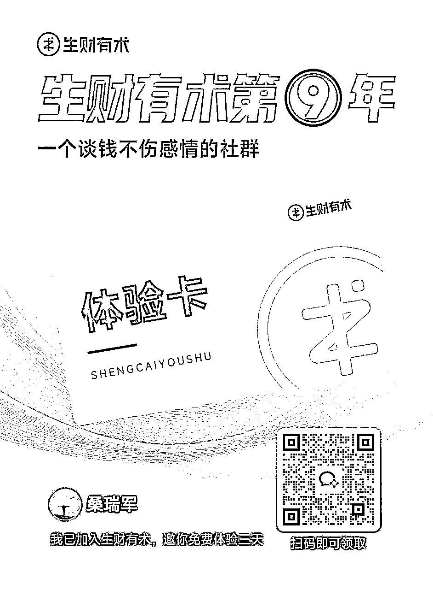

来源：https://hbpjvuidft.feishu.cn/docx/PhZmdAHGKorJDnxymfDcXwcangc
有很多同学，刚离开或者想要离开职场，很迷茫，不知道自己该往哪个方向走，不知道该做什么。别着急，这是你上升期的起点，未来一段时间内你将都是上坡路。请你一定仔细阅读下面的内容，可能不会给你一个具体的答案，但是希望能给你一个重新出发的理由！
👫 （专为职场迷茫/失业者设计）
核心理念： 自救不是想出来的，是做出来的。用最小行动打破焦虑循环，出路在反馈中浮现。
我是谁：
姓名：桑瑞军
现居：杭州
标签：18线外地农村，前美妆品牌营销总监，30+裸辞
过往经历：8年品牌营销、短视频推广、直播经验
现在在做：访谈100位离职后的朋友是如何搞钱？致力于帮助1000个离开职场的同学找到自己的方向。
核心思路（重要）：
目标： 看到自己的世界外在发生什么，找到“原来还能这样赚钱”的启发。
加入社群（如知识星球“生财有术”、不上班俱乐部、自由职业交流群等），小红书“一人公司”“第二人生梦想家”话题、、B站“自由职业”UP主评论区。

【关键行动】深度观察10个案例：
在圈子/平台上找到10个和你背景类似（如前HR、设计师、程序员）的成功案例。
记录： 他们具体做什么？启动成本多少？怎么获客？赚多少钱？（不追求精确，看模式）
避坑提示：
目标： 不再空想“我喜欢什么”，而是基于观察到的机会，匹配自身可快速上手的优势。
附：个人定位诊断表
目标： 用最小成本体验“生意闭环”，赚到第一块钱（哪怕1元），破除对创业的恐惧。
“前大厂HR怒改3000份简历！
专注互联网/快消/外企领域，
59元帮你避开【已读不回】雷区！
今日首单送面试话术秘籍”
（配图：马赛克公司名的优化前后对比图）
前大厂HR告诉你为啥你投的简历总是没人回
HR告诉你：离职后空窗期太久了，怎么办？
被裁员了，面试时应该怎么回答？
在BOSS直聘私聊近期活跃求职者：“看到您找工作，需要免费简历建议吗？我是前XX公司HR”
若仍无客户：用家人手机下一单（做案例）
朋友圈：有想找工作的，免费帮你调简历，换句反馈就行
交付时必说：“我可以用用你的案例发朋友圈和小红书吗（打马赛克），返您10元红包！”
包装产品，按市场价，设置引流品、中端品、高客利润品
例：基础版79元（改简历），进阶版199元（简历+面试模拟），高阶版1999元（包拿offer）
这份文档不是让你“准备完美再出发”，而是给你一把铲子，立刻在你脚下挖出第一锹土。自救之路，始于第一个能被市场验证的小动作。 现在马上梳理你自己的优势，找肉眼可见的项目，在最短时间用最低成本完成一个mvp测试！
核心步骤：梳理个人优势，建立个人品牌，包装自己的优势，使自己的价值被更多的人看到。
说白了，打工和创业都是在跟市场做价值交换。区别就是打工比较被动，老板说啥你做啥；创业是主动的，你自己找机会创造价值。
我们每个人都有自己的价值，问题是怎么挖掘出这个价值，让这个价值在市场上卖个好价钱。
这个时代，人脉、资源、机会都是往那些看起来优秀的人那里跑的。注意，是"看起来"优秀。你真的很厉害，但别人不知道，那就等于没用。
个人品牌其实就是要回答三个问题：
这三个问题想清楚了，你就知道能吸引到什么样的人和资源了。
第一步：梳理自己的优势 别小看自己，每个人都有独特的地方。你的专业技能、工作经验、甚至性格特点，都可能是你的优势。
第二步：让更多人看到你 现在短视频和直播已经是做任何生意的标配了。以前找工作就是投简历，现在你可以通过视频、文章让全世界看到你的能力。
想想看，以前你投简历只能给几十家公司看到，现在一个视频可能几万人看到。吸引来的不只是工作机会，还有各种意想不到的合作机会。
第三步：主动展示价值 不管你在做什么，都要让别人知道。别害羞，要敢于告诉全世界你在做一件很棒的事情。只有你自己都觉得自己牛，别人才会觉得你牛，那些厉害的人才愿意跟你合作。所谓人脉资源、向上社交，并不是有对方微信号，而是你自己有价值，能被大佬看到你的闪光点，认可你，觉得值得交往。
这个时代给了普通人前所未有的机会。互联网让每个人都有可能被看见，社交媒体让打造个人品牌的成本变得很低。
关键是要开始行动。不要等什么完美时机，从今天开始认真思考自己的价值，挖掘出自己的卖点，去市场上交换价值，开始做自己的个人品牌。
在这个短视频、直播盛行的时代，敢于向世界展示自己，被看见就是成功的第一步。
最后推荐几个最近比较容易快速拿到结果的小生意：小红书实物电商、小红书虚拟资料、AI代写、AI短视频